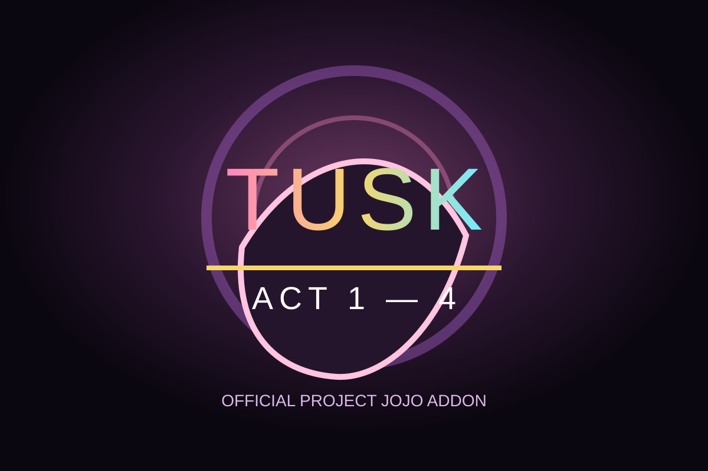

TUSK
A multi-ACT Stand built around a Nail resource, evolving from ranged Nail attacks and wormholes into ACT4's full combat kit.
ACT SYSTEM
Tusk progresses through ACT 1–4. Each ACT changes the skill kit, and unlocked earlier ACTs remain useful instead of ACT4 permanently replacing every playstyle.
ACT 1 — Nail Shot / Volley
Ranged Nail pressure and basic Nail-resource management.
ACT 2 — Golden Spin / Moving Hole
Adds stronger positional tools and Moving Hole interactions.
ACT 3 — Wormhole Travel / Wormhole Shot
Uses wormholes for movement and unusual firing angles. Dark VFX use the h / h2 / m / s / s_w effect set for opening, closing, smoke, entry and exit.
ACT 4 — Punch / Barrage / Nail / Infinite Rotation
ACT4 gains true melee Punch and Barrage layers while retaining Nail pressure and Infinite Rotation. Skills 3–4 originate from the user instead of forcing the ACT4 body to punch during a shot.
ACT4 Visual / Animation
v0.1.0.248 retains the corrected Punch arm, clone-arm Barrage layer, smaller Nail visual and Dark Wormhole VFX from the .246–.247 line.